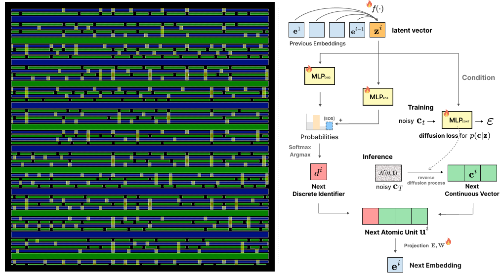

While Transformer-based autoregressive models excel in data generation, their token discretization strategy inherently limits their precision in continuous domains. We analyze the scalability limitations of existing discretization-based approaches for generating hybrid discrete-continuous sequences, particularly in high-precision domains such as logos, layouts, and semiconductor circuit designs, where precision loss potentially leads to visual artifacts, aesthetic degradation, and even functional failure.
To address the challenge, we propose a novel unified framework that jointly models discrete and continuous values for variable-length sequences. Our approach employs a hybrid approach that combines categorical prediction for discrete values with diffusion-based modeling for continuous values, incorporating two key technical components: an end-of-sequence (EOS) logit adjustment mechanism that uses an MLP to dynamically adjust EOS token logits based on sequence context, and a length regularization term integrated into the loss function. Additionally, we present ContLayNet, a large-scale benchmark comprising 334K high-precision semiconductor layout samples with specialized evaluation metrics that capture functional correctness, where precision errors significantly impact performance. Experiments on multiple domains show that our approach achieves higher-fidelity hybrid vector representations than discretization-based and fixed-schema baselines, while effectively scaling to high-precision generation.

IPAM represents each element of a layout or vector graphic as an atomic unit combining a discrete identifier (e.g., element type) with a continuous vector (e.g., position and size). A single autoregressive model generates these units jointly: discrete identifiers are predicted with a standard categorical head, while continuous vectors are generated by a diffusion model conditioned on the autoregressive context, so coordinates are never rounded to a fixed grid. An EOS logit adjustment mechanism and a length regularization loss give the model explicit, differentiable control over when to stop, letting it produce sequences of the length the input actually calls for.
This combination — hybrid values, autoregressive generation, and variable sequence length — is what sets IPAM apart from prior work, as summarized below.
| Method | Hybrid? | Autoregressive? | Variable-Length? | Domain |
|---|---|---|---|---|
| LT (Gupta et al., 2021) | — | ✓ | ✓ | Layout |
| IconShop (Wu et al., 2023) | — | ✓ | ✓ | SVG |
| DLT (Levi et al., 2023) | ✓ | — | △ | Layout |
| DP-TBART (Castellon et al., 2023) | — | ✓ | — | Tabular Data |
| TabNAT (Zhang et al., 2025) | ✓ | — | — | Tabular Data |
| IPAM (Ours) | ✓ | ✓ | ✓ | Domain-Agnostic |
Semiconductor circuit design is where this precision gap matters most: a rounding error of even a single grid cell can turn a working layout into one that fails outright. To evaluate IPAM in exactly this regime, we build ContLayNet (visualized on the left above), a benchmark of 334K real-world, nano-scale semiconductor layouts kept at their native, variable-length, high-precision resolution rather than downsampled to a fixed grid. Because standard image or layout metrics don't capture whether a generated circuit would actually function, we pair the benchmark with evaluation metrics based on Design Rule Checks (DRCs), the same checks used to verify real chip layouts, giving a direct measure of functional correctness alongside visual fidelity.